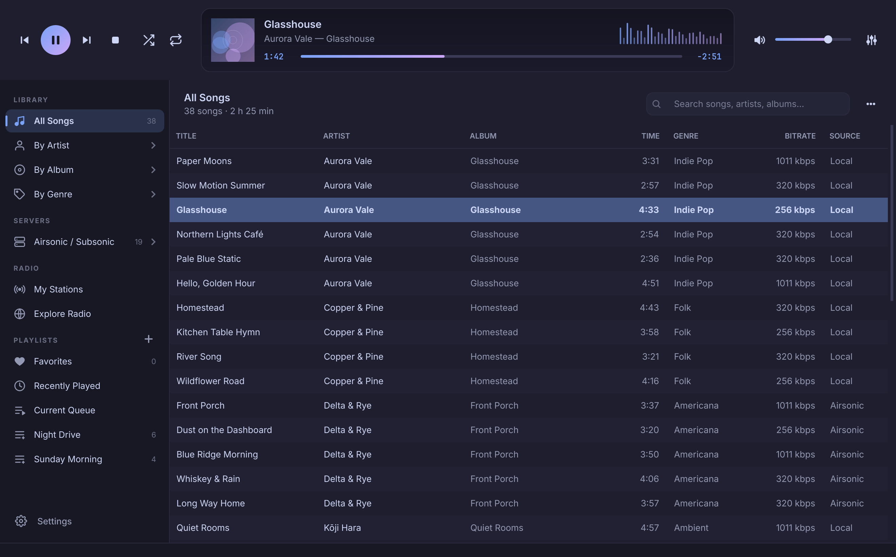
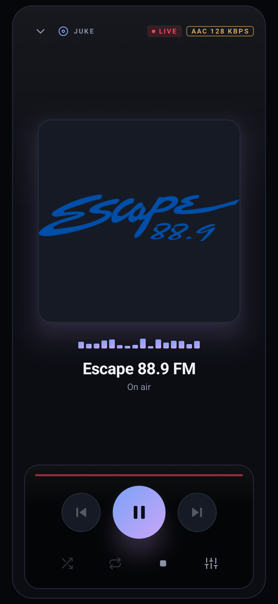
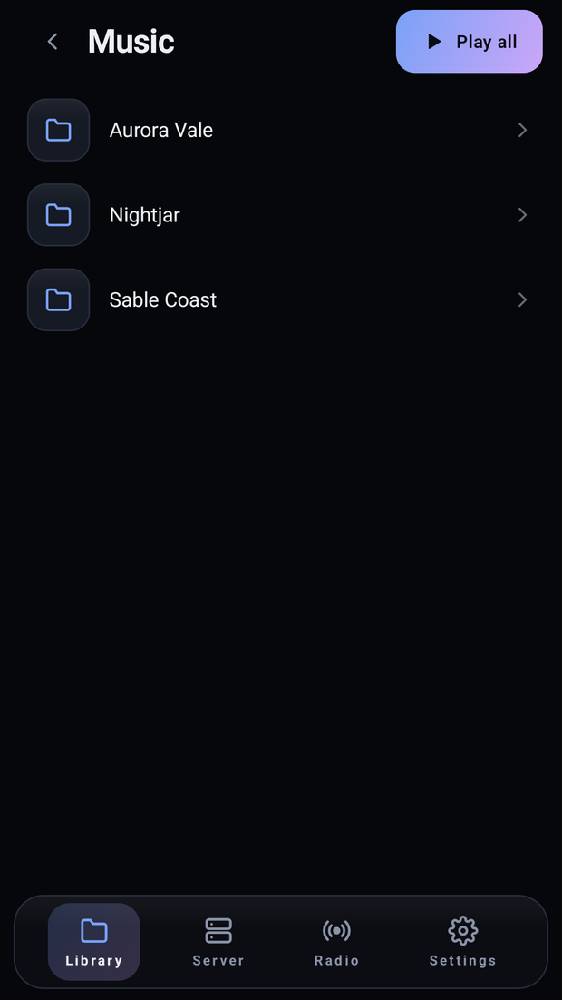
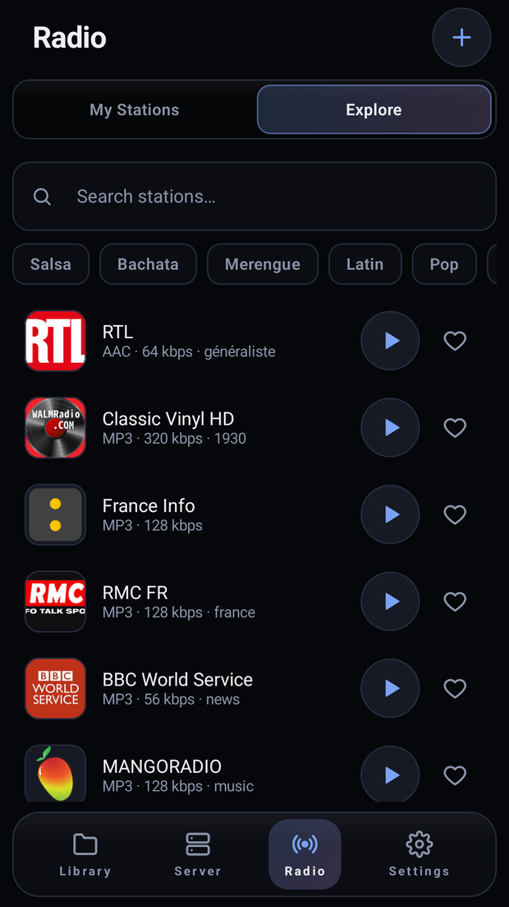

A modern music player for Linux
Three panes, a 10-band equalizer, Airsonic streaming and internet radio — instant with 50,000+ tracks, and easy on the battery.
Linux x86_64 · glibc 2.35+ · everything included in one file

Features
A classic three-pane layout, rebuilt with a dark or light, rounded, Libadwaita-flavoured interface and an audio engine you can tune.
Sources on the left, songs in the middle, an LCD display with cover art, seek bar and level meter on top.
A virtual, lazy table and an indexed SQLite database: search, sort and filter never wait for your whole library.
60 Hz to 16 kHz, ±20 dB preamp, ten presets and your own — through libVLC's native equalizer, never reset between songs.
Browse your Subsonic server the way you organised it — folder by folder — or by artist, album and genre. A 6,000-song library syncs in about 8 seconds.
Play next drops a song right after the current one; Add to queue goes to the end. Build your own playlists with the + button.
The whole interface switches language live. This page too.
Qt 6 scaling, fractional included. Every icon is an SVG drawn at your screen's exact scale — no blurry pixels.
An AppImage with Python, Qt and libVLC inside, so there is nothing else to install. The first time it runs it adds itself to your applications menu, icon included.
Explore the community directory or paste any web page or stream: Juke finds the audio, shows LIVE and the song on air, and follows stations when they change address.
An idle Juke makes no wake-ups; playing on battery it uses about 1 % of one core. The level meter rests when you unplug.
Pick a theme or match your desktop. Both are checked for legibility and switch instantly with Ctrl+T.
Juke tells you which version you are on, which one is out and what changed, and you accept or cancel. Downloads are checksum-verified.
Make folders, nest them, drag songs in or drop whole folders from your file manager. No import step. It all lives in Music.juke, a library folder inside Music; your files are never moved.
Change tags and the cover of one song, or select many with Ctrl+A or Ctrl+click and edit them together. Only what you change is written.
Sort any folder A→Z, Z→A, by number, newest or oldest, and find duplicate songs from the ⋯ menu.
Ten light and ten dark, from soft pastels to deep forest and neon, one click from the palette button. All of them checked for legibility.
Find lyrics by the song's name or paste them. A column opens by itself when the song has lyrics and lights up the line being sung.
Send feedback and read the log from the ⋯ menu. The report opens as a GitHub issue for you to review, with your folders, passwords and server address hidden.
Screenshots
Android
Juke also runs on a phone or a tablet: your files, your server and your stations, in a player that uses the whole screen.
Downloads it, makes it executable and starts it.
curl -fsSL https://vezzulab.github.io/juke/install.sh | shAndroid 8 and newer · phones and tablets · about 3 MB


Your folders, as you filed them
Stations from the directory or from any pageInstall
Everything is inside the file, so there is nothing else to install. The first time it runs, Juke adds itself to your applications menu.
Linux asks for this once for any downloaded program: right-click ▸ Properties ▸ Allow executing, or from a terminal.
chmod +x Juke-x86_64.AppImage
./Juke-x86_64.AppImageJuke adds itself to your applications menu with its icon; undo it any time in Settings.
~/.local/share/applications/juke.desktop
~/.local/share/icons/hicolor/…/juke.pngOnly for the source install, Juke needs libVLC on the system (the AppImage carries its own). Then:
git clone https://github.com/vezzulab/juke.git
cd juke
python -m venv .venv && . .venv/bin/activate
pip install -e .
juke| Distribution | libVLC |
|---|---|
| Fedora | sudo dnf install vlc-libs |
| Debian / Ubuntu | sudo apt install libvlc5 vlc-plugin-base |
| Arch | sudo pacman -S vlc |